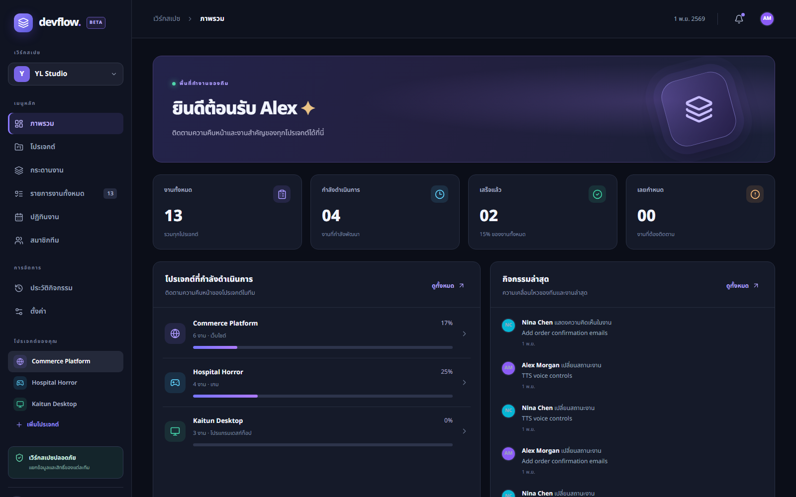

DEVELOPER PROJECT MANAGEMENT
จัดการงาน Developer
ในเวิร์กสเปซเดียว
ตัวอย่างหน้าจอ DevFlow ภาษาไทย รองรับการวางแผนโปรเจกต์ กระดานงาน ปฏิทิน ประวัติ และระบบสิทธิ์ที่หัวหน้าตั้งค่าได้
ⓘ หน้านี้เป็นตัวอย่างภาพหน้าจอสำหรับดูดีไซน์เท่านั้น ไม่ใช่ระบบ SaaS ที่ล็อกอินหรือบันทึกข้อมูลร่วมกันได้
DevFlow · ภาพตัวอย่างจากเว็บภาษาไทย
